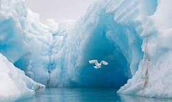
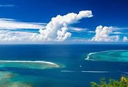
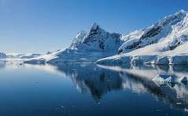

The ocean covers 70 percent of Earth's surface. It contains about 1.35 billion cubic kilometers (324 million cubic miles) of water, which is about 97 percent of all the water on Earth. The ocean makes all life on Earth possible, and makes the planet appear blue when viewed from space.9 Dec 2024
The term “Arctic” comes from the Greek word arktos, which means bear. Greek seafarers called the Arctic region, into which they had presumably already ventured for the first time around 325 BC, “land under the constellation of the Great Bear”.
The Pacific Ocean is the largest and deepest ocean basin on Earth, covering more than 155 million square kilometers (60 million square miles) and averaging a depth of 4,000 meters (13,000 feet).
Indian Ocean, body of salt water covering approximately one-fifth of the total ocean area of the world. It is the smallest, geologically youngest, and physically most complex of the world's three major oceans (Pacific, Atlantic, and Indian).
The Southern Ocean (also known as the Antarctic Ocean) is one of the five great ocean basins on Earth. It was formed around 34 million years ago when Antarctica and South America drifted apart, creating the Drake Passage. This makes it the youngest ocean basin on earth.
The Atlantic Ocean lies between North and South America on the west and Europe and Africa on the east. Up north, the Atlantic connects to the Arctic Ocean and to the Southern Ocean to the south. Scientists often divide the Atlantic into two basins: the North Atlantic and the South Atlantic.4 Jan 2021